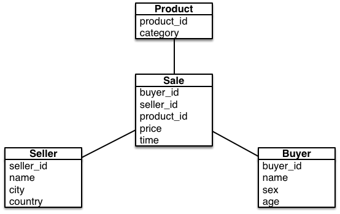
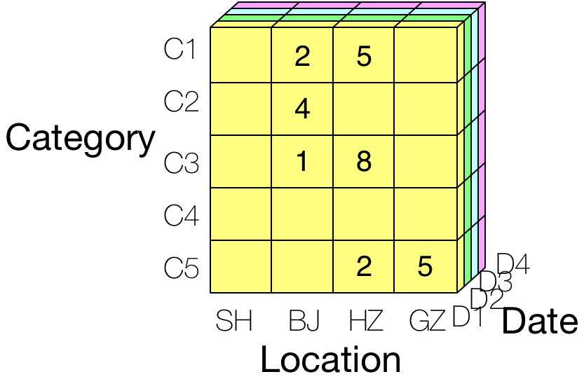
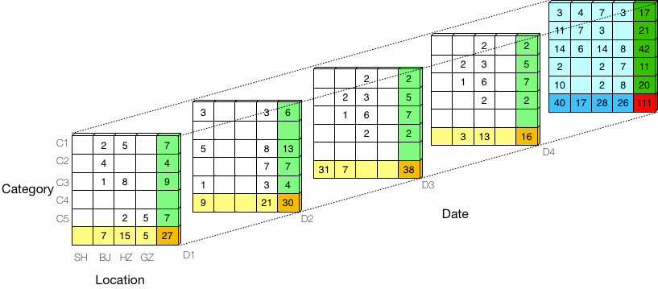

Apache Kylin是一款构建于Hadoop之上的分布式OLAP引擎，支持TB级别数据集的多维度实时查询。
为什么要采用 Kylin 呢？通过下面这个例子我们来简单了解下。
需求： 某业务将用户行为表存在Hive之上，包含8个维度，需要对各种维度组合计算Count/Sum等度量值。
传统做法： 对于每一种组合（共255种）的分析需求，都需要撰写一个Hive SQL并将结果存储到MySQL。这样的做法遇到几个困难：
- 管理复杂： 用户需自行管理一系列分析任务，每来一个新的分析需求，需要撰写新的预处理SQL。
- 预处理太慢： 不同维度组合间存在大量重复计算，浪费计算资源。实测几千万行的表，8个维度预处理就要超过一天。
Kylin的实现方式，用户仅需三步：
- 一次定义： 选择Hive表，添加待分析的维度和度量；（Kylin称之为Cube定义）
- 自动预处理： Kylin会根据Cube定义做预处理，自动计算所有维度组合的度量值；
- 亚秒级查询： 用户像查询MySQL、Hive表一样执行SQL，TB级别的数据，亚秒级返回。
使用Kylin有如下优势：
- 管理简单： 用户只需定义维度和度量，而无需关心预处理过程，也不需要在Hive与MySQL之间导来导去；
- 预处理快： 测试显示Kylin的计算成本降低一半，预处理速度提升10倍
- 查询速度快： 3TB的原始数据构建Cube，查询大部分在1秒以下；
- 数据规模大： 支持TB级别数据，不用再为MySQL分库分表烦恼了；
- 接入简单： 通过JDBC、ODBC、RESTful API等接口执行查询；
基本概念
星形模型（Star Shcema）：代表一张实事表引用任意数目的维度表；
事实表（Fact Table）：事实表包含业务过程中的度量值，指标或者事实，例如：销售表包含卖家ID，买家ID，商品ID，价格，交易时间；
查询表（Lookup Table）：查询表用于将索引关联到一系列信息，例如卖家表就是查询表，包含卖家ID，卖家名称，卖家所在城市、国家等；
维度（Dimension）：维度用于描述事实或度量，以回答用户的业务问题，例如位置，时间，产品类别等；
度量（Measure）：度量是可以用来进行计算（COUNT，SUM，AVERAGE）的一种属性，例如价格就是一种度量；
基数（Cardinality）：维度列的不同值的数目，如City列基数就是不同城市的数目；
一个星型模型的例子：

我们通常会执行如下的业务查询，例如在过去一周，销量前10的产品类别：
SELECT category, sum(price) |
这里，产品类别和时间就是维度（Dimension），用于描述业务关心的角度，其他如用户性别，用户年龄，卖家区域等都是维度；而价格就是度量（Measure），描述可计算值的属性。
假设我们关心的三个维度是产品的类别（Category），商店的位置（Location），以及销售的时间（Date），而度量只有一个值：销售额（单位是K），用Cube模型表示如下图所示：

该图中每个单元格代表某个日期，某个城市，某类别产品的销售总额。
展开来并计算总量后的图示如下：

白色单元格代表原始的销售数据；
浅黄色代表某日某个城市的销售额（将各类别汇总），浅蓝色代表某个城市某个类别的销售额（将各日期汇总），浅绿色代表某日某个类别的销售额（将各城市汇总）；
深黄色代表某日的销售总额，深蓝色代表某个城市的销售总额，深绿色代表某个类别产品的销售总额；
红色代表所有商品的销售总额。
Kylin 名词解释
表（Table）：Hive表的映射，构建Cube的数据源，从Hive同步而来；
模型（Model）：支持星形数据模型，描述事实表，查询表以及过滤条件；
Cube描述（Cube Description）：描述Cube的定义，如使用哪个模型、哪些维度、哪些度量值、分段的策略；
Cube实例（Cube Instance）：根据Cube描述构建的实例，包含一个或多个Cube分段；
分区（Partition）：用户可以指定时间列，用于将Cube分成多个区段；
Cube分段（Cube Segment）：Cube数据的真正载体，映射到一个HTable表，一个构建任务构建Cube实例的一个指定区段；如果特定时间区间内的数据更新，可以刷新该分段避免更新整个Cube；
Kylin 适用场景
查询模式固定，关心维度数量少（<15），数据量大（TB）。
Kylin 实践经验
- 控制维度的数目，维度数目不宜超过15。
- 不要使用基数（Cardinality）特别大的列做为维度列。通常维度列的基数不会特别大，例如日期则过去几年总共1K左右，商品类别，城市都是有限的数目。而用户、卖家等则不适合做维度，更适合做维度的是用户年龄段，用户性别等特征做为维度，用户不适合直接做为维度。如果维度列基数很大，则可以通过一些方法减少，例如商店的价格，直接做维度基数很大，可以将其分成区段(0-100), (100-1000), … 能有效减少维度的基数。
- 不要对基数（Cardinality）特别大的度量列计算精确DISTINCT COUNT。例如需要统计点击的用户数，用户是度量列，度量算法为Distinct Count，建议使用HLL算法。如果使用精确算法，因用户数量巨大（亿级），需对用户构建字典，会导致任务失败。
- 基于仓库端join好的fact事实表建Cube，减少对小规模集群带来的hive join压力。
- 事实表使用维度ID，而不是维度名称。如果在事实表中直接使用维度名称，那么当维度名称变更时，必然导致所有Cube需要重新构建。例如：原本城市维度，0571代表的是杭州，现改名为临安，那么Cube需要重建。一种做法是将维度ID到维度名称的映射保存在MySql，接受查询时将名称映射为ID，返回结果时又将ID映射为名称。
- Cube的维度如果超过10个，建议将常用的聚合字段做分组
- Cube定义中RowKey顺序：Mandatory维度，Where过滤条件中出现频率较多的维度，高基数维度，低基数维度。
- 时间分区选做维度。Hive常见的分区方法是按时间分区，例如dt, hour等。如果有这样的分区列，通常我们会将其选做维度，原因有：构建Cube时过滤数据：构建Cube通常是增量构建，如过去一天，在模型中将Partition Date Column指向时间分区列，能有效缩减原始数据范围； 查询是过滤：查询时指定时间，能有效缩减搜索范围。